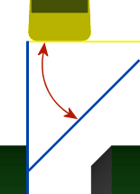

<div id="chamferAngleTurningPart"><p>水平軸から測定した面取りの角度を指定します。</p>
<table class="tipTable" cellspacing="10">
<tr>
<td><center></center></td>
</tr><tr>
<td><center><p><b>面取り角度</b></p></center></td>
</tr></table>
</div>